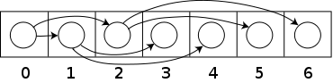
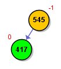
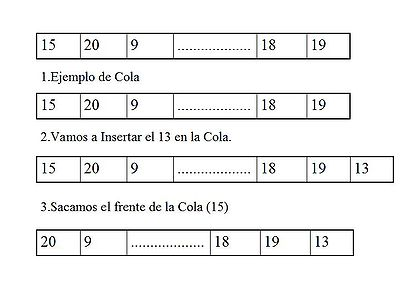
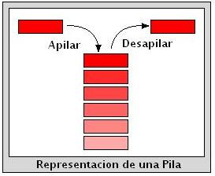

Animador de Estructuras Dinámicas
La mejor manera de comprender las estructuras de
datos es verlas en acción. Por eso hemos desarrollado
animaciones interactivas para una variedad de estructuras de datos:
Otras datos de interés:
Heap
Un heap es una estructura de árbol con información
perteneciente a un conjunto ordenado. El heap tiene la característica
de que cada nodo padre tiene un valor mayor ó menor que el de
todos sus nodos hijos.
Un árbol cumple la condición de heap si satisface
dicha condición y además es un árbol binario
completo. Un árbol binario es completo cuando todos los
niveles están llenos, con la excepción del último
que puede quedar exento de dicho cumplimiento, pudiendo faltar los
nodos a la derecha a partir de uno determinado.
Si bien se puede utilizar un árbol binario para representar
un heap, la condición de árbol completo permite
representar fácilmente un heap en un vector colocando los
elementos por niveles y en cada nivel, los elementos de izquierda a
derecha. El nodo raíz se almacena en la primera posición
del vector. Siempre se puede calcular la posición de los hijos
o la del padre a partir de la posición de un nodo en el
arreglo (contando las posiciones del arreglo a partir de cero):
El nodo raíz se almacena en la posición 0 del
arreglo.
Los hijos de un nodo almacenado en la posición k
se almacenan en las posiciones 2k+1 y 2k+2
respectivamente.

Un árbol binario completo guardado como arrreglo
Controles de animación
Insertar: Inserta un elemento en el heap (el valor
debe ser un número entero entre 0 y 999).
Eliminar: Elimina la raíz del heap.
Random: Inserta un elemento en el heap, cuyo valor es
elegido al azar entre 0 y 999.
Limpiar: Elimina a todos los elementos del heap.
Tamaño del heap: Cambia el tamaño del
heap. Por defecto el tamaño del heap es 31. Al cambiar el
tamaño del heap, se eliminan todos los elementos del mismo.
Código de colores de los nodos durante las animaciones
Amarillo: Los nodos están de color amarillo
cuando el heap está bien formado.
Rojo: Los nodos están de color rojo cuando se
producen rotaciones para reconstruir el heap. Para que los nodos se
pongan de color rojo se tuvo que haber realizado una eliminación
ó una inserción
Árboles
Binarios de Búsqueda
Un ABB es un árbol en el cuál cada nodo tiene a los
sumo 2 hijos y se verifica que para todo nodo del árbol:
valor del subárbol izquierdo <
valor del nodo < valor del subárbol derecho
Subárbol derecho de un nodo: es el ABB que
tiene como raíz al nodo hijo derecho de otro nodo del árbol.
Subárbol izquierdo de un nodo: es el ABB que
tiene como raíz al nodo hijo izquierdo de otro nodo del
árbol.
Código de colores de los nodos durante las animaciones
|

|
El nodo es amarillo cuando se inserta correctamente en
el árbol.
|
|

|
El nodo alterna entre naranja y verde cuando está
siendo visitado (para conocer si tiene nodos hijos al insertar o
bien para buscarlo cuando se elimina).
Luego, cambia a naranja para indicar que ya fue visitado
(y posteriormente necesite ser actualizado el balance del mismo)
|
|

|
El nodo es rojo cuando es procesado al ser recorrido.
|
|

|
El nodo es rojo cuando es eliminado.
|
Árbol Binario de Búsqueda Balanceado por Altura
Un ABB está Balanceado por Altura cuando para cada
uno de sus nodos ocurre que las alturas de sus dos subarboles
difieren a lo sumo en K (parámetro entero no nulo).
Para el caso particular en que K vale 1, a este árbol
se lo llama Árbol AVL (por sus autores Adel'son-Vels'ki y
Landis).
Gracias a este balanceo, se cumple que la altura total del
arbol [h(n)] con n nodos está acotada por:
log2(n+1) ≤ h(n) ≤ 1.44042 * log2(n+2) -
0.33772
es decir, la altura total es O(log(n)).
Controles de animación
Insertar: Inserta un nodo en el árbol (el valor
debe ser un número entero entre 0 y 999).
Insertar Random: Inserta un nodo en el árbol,
cuyo valor es elegido al azar entre 0 y 999.
Eliminar: Elimina un nodo del árbol (*).
Recorrer: Visita a los nodos en el orden especificado
(In-Order, Pre-Order o Post-Order).
Limpiar: Elimina a todos los nodos del árbol.
Cambiar parámetro: Cambia la diferencia de
altura máxima permitida entre los subárboles izquierdo
y derecho de cada nodo (se puede elegir entre 1 y 9). Por defecto,
este valor es 1 (correspondiente al Árbol AVL).
Al final de cada operación, se indican la “cantidad
de operaciones realizadas” (entre rotaciones y comparaciones).
(*) Al eliminar un nodo con todos sus hijos, la implementación
desarrollada realiza rotaciones hasta que el nodo quede con un único
hijo (en vez de buscar el nodo sucesor).
Referencias
[1] Handbook of algorithms and data structures (2º
editon) - Gonnet, Baeza-Yates. Addison-Wesley, 1991.
[2] Data structures and network algorithms - Tarjan. SIAM,
1983.
[3] Handbook of Data Structures and Applications - Mehta,
Sahni. Chapman and Hall, 2005
Árbol Binario de Búsqueda Balanceado por Peso
Un ABB está Balanceado por Peso cuando para cada
uno de sus nodos ocurre que el balance p(t) está
acotado por:
[a, 1-a], con a tal que 0 ≤
a ≤ 1/2.
El balance del nodo t, p(t), se define como:
p(t) = cant_nodos en t_izquierdo / cant_nodos
en t
Para esta implementacion, el parámetro a vale 1/3.
Se cumple que la altura total del arbol [h(n)] con n nodos
está acotada por:
log2(n+1) ≤ h(n) ≤ log2(n)/log2(1 - a)
es decir, la altura total es O(log(n)).
Fue introducido por Nievergelt y Reingold (1973).
Controles de animación
Insertar: Inserta un nodo en el árbol (el valor
debe ser un número entero entre 0 y 999).
Insertar Random: Inserta un nodo en el árbol,
cuyo valor es elegido al azar entre 0 y 999.
Eliminar: Elimina un nodo del árbol (*).
Recorrer: Visita a los nodos en el orden especificado
(In-Order, Pre-Order o Post-Order).
Limpiar: Elimina todos los nodos del árbol.
Al final de cada operación, se indican la “cantidad
de operaciones realizadas” (entre rotaciones y comparaciones).
(*) Al eliminar un nodo con todos sus hijos, la implementación
desarrollada realiza rotaciones hasta que el nodo quede con un único
hijo (en vez de buscar el nodo sucesor).
Referencias
[1] Handbook of algorithms and data structures (2º
editon) - Gonnet, Baeza-Yates. Addison-Wesley, 1991.
[2] Data structures and network algorithms - Tarjan. SIAM,
1983.
[3] Handbook of Data Structures and Applications - Mehta,
Sahni. Chapman and Hall, 2005
Queue (Cola)
Una cola (queue en inglés) es una estructura
de datos, caracterizada por ser una secuencia de elementos en la que
la operación de inserción encolar (enqueue)
se realiza por un extremo y la operación de extracción
desencolar (dequeue) por el otro. También se le
llama estructura FIFO (del inglés First In First Out,
primero en entrar, primero en salir).

Controles de animación
Insertar: Inserta un nodo en la cola (en la cola).
Insertar Random: Inserta 10 nodos en la cola cuyo
valor es elegido al azar entre 0 y 99.
Eliminar: Elimina un nodo de la cola (el frente).
Vaciar: Elimina todos los nodos de la cola.
Stack (Pila)
Una pila (stack en inglés) es una lista
ordinal o estructura de datos en la que el modo de acceso a sus
elementos es de tipo LIFO (del inglés Last In First Out,
último en entrar, primero en salir) que permite
almacenar y recuperar datos.
Para el manejo de los datos se cuenta con dos operaciones básicas:
apilar (push), que coloca un objeto en la pila, y su
operación inversa, retirar (o desapilar, pop),
que retira el último elemento apilado.

Controles de animación
Insertar: Inserta un nodo en la pila (en el tope).
Insertar Random: Inserta 10 nodos en la pila cuyo
valor es elegido al azar entre 0 y 99.
Eliminar: Elimina un nodo de la pila (el tope).
Vaciar: Elimina todos los nodos de la pila.
Trie
La palabra TRIE proviene de las letras centrales de la palabra
"retrieval" (recuperación - de información
-). Un trie es un árbol de búsqueda que utiliza partes
de la clave para realizar las operaciones de búsqueda,
inserción y eliminación. Cada clave es una secuencia de
caracteres, y un trie se organiza de acuerdo a estos caracteres en
lugar de hacerlo en torno de la clave completa.
Algunas variantes
array-trie: cada nodo es un vector de punteros para
acceder a los subárboles directamente. Esta solución
es adecuada cuando la cardinalidad del alfabeto es pequeña
(por ejemplo, para cadenas binarias), en caso contrario es necesario
crear una gran cantidad de punteros nulos.

Un trie implementado con arrays. Alfabeto = { A, D,
E, I, M}
list-trie: esta estructura soluciona el alto costo de
almacenamiento de los trie implementados con arrays. Este caso, cada
nodo es una lista enlazada por punteros que contiene dos punteros,
uno al nodo hijo más a la izquierda y otro al siguiente
hermano. Esta implementación, no permite el acceso aleatorio
a los punteros almacenados en los nodos, por lo que no es posible
seleccionar un nodo hijo en tiempo constante, y aunque la lista de
nodos puede mantenerse ordenada, en el peor de los casos todos los
nodos hijos deberán ser examinados.

Un trie implementado con listas
Controles de animación
Insertar: Inserta una clave en el trie.
Eliminar: Elimina una clave del trie.
Demo: Inserta una secuencia de claves en el trie.
Limpiar: Elimina a todos los nodos del trie.
Código de colores de los nodos durante las animaciones
Amarillo: Un nodo es amarillo cuando el nodo ha sido
insertado.
Verde: Un nodo es verde cuando ha sido encontrado
durante una búsqueda, o va a ser eliminado.
Rojo: Un nodo es rojo cuando no coincide con el nodo
buscado. En el caso de la eliminación de una clave, el nodo
no puede ser eliminado.
Referencias
[1] Applied data structures with C++ - Peter Smith
[2] Data Structure And Algorithms in C++ 2nd ed - Adam
Drozdek
[3] An introduction to data structures and algorithms -
Andrew Storer
[4] Data structures and algorithms - Alfred V. Aho, John E.
Hopcroft, Jeffrey D. Ullman
[5] Handbook of data structures and applications - Dinesh
P. Mehta, Sartaj Sahni
Controles de
Animación
Para controlar las animaciones, se usan los siguientes controles:
Interactivo: Activa el modo manual de las animaciones,
donde la animación de una acción determinada se
realiza con interacción del usuario, paso por paso hasta que
se termina. De este modo, se comprende con mayor detalle los pasos
que se van realizando durante la animación.
Siguiente: (Solo en modo Interactivo) Se pasa el
siguiente paso de la animación.
Deshacer: (Solo en modo Interactivo) Deshace el último
paso de la animación. Esto es útil para repetir el
último paso (y no toda la animación) debido a que la
misma se hizo rápidamente y no se llegó a comprender
el detalle.
Control de Velocidad: Aumenta o diminuye la velocidad
de las animaciones.
Acerca de...
Esta aplicación formó parte de un Trabajo Práctico
de la asignatura Taller de
Programación II de la Faculta
de Ingeniería de la UBA.
Fue desarrollado durante el transcurso del Primer Cuatrimestre de
2009 por:
CURIA, Exequiel Osvaldo
FREIJE, Agustina
GORIN, Patricio
HERNÁNDEZ, Duilio